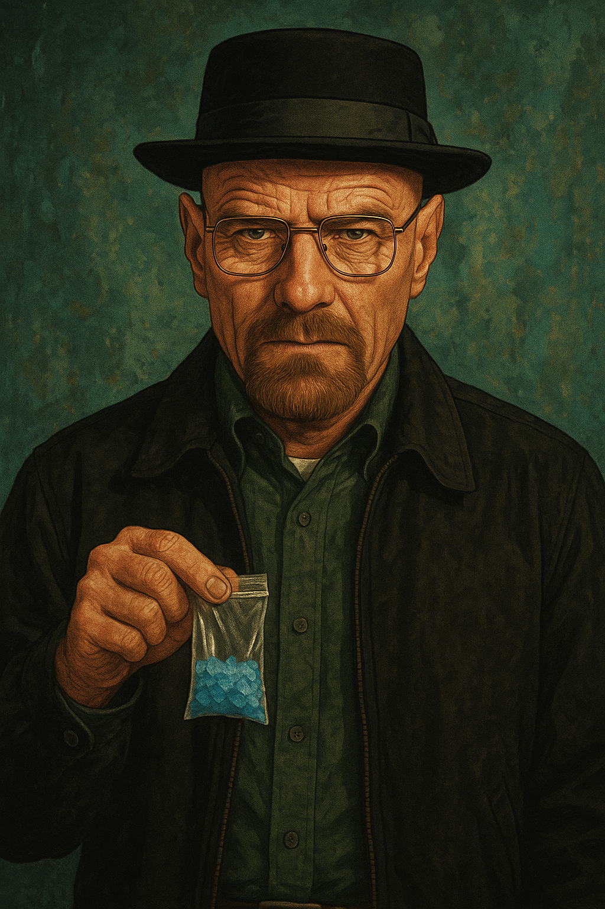
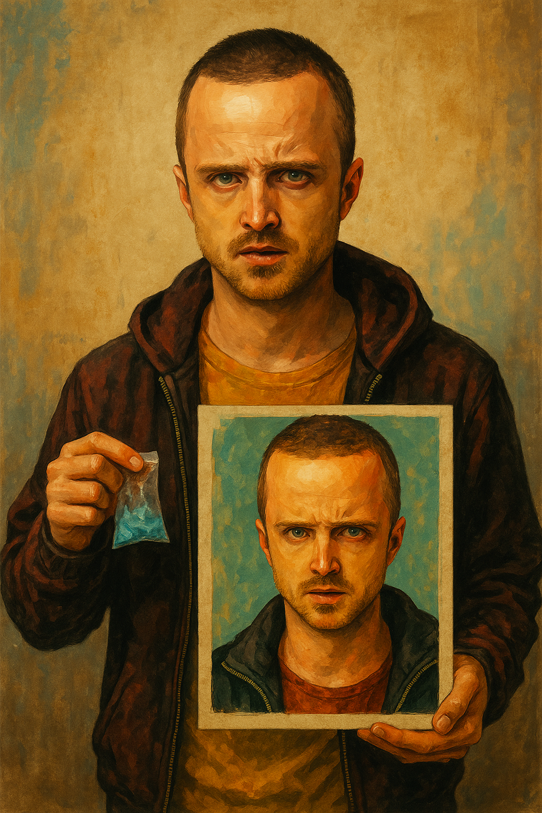

Walter White
Walter White es el personaje principal. Es un profesor de química que se convierte en un jefe de narcotráfico en Nuevo México.
Jesse Pinkman
Jesse Pinkman es el socio de Walter White. Es un vendedor de drogas que ayuda a Walter White a crear y vender metanfetamina.
